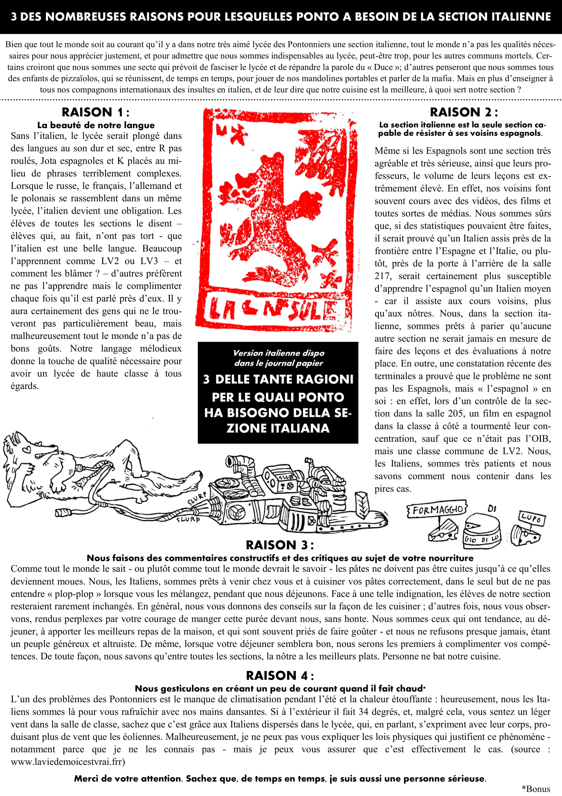

Voici une traduction de l'article 3 delle tante ragioni per le quali ponto ha bisogno della sezione italiana, dispo dans le n°2 (novembre).
Une version téléchargeable en PDF se trouve en bas de la page pour une lecture plus comfortable
Rédaction: Amira
